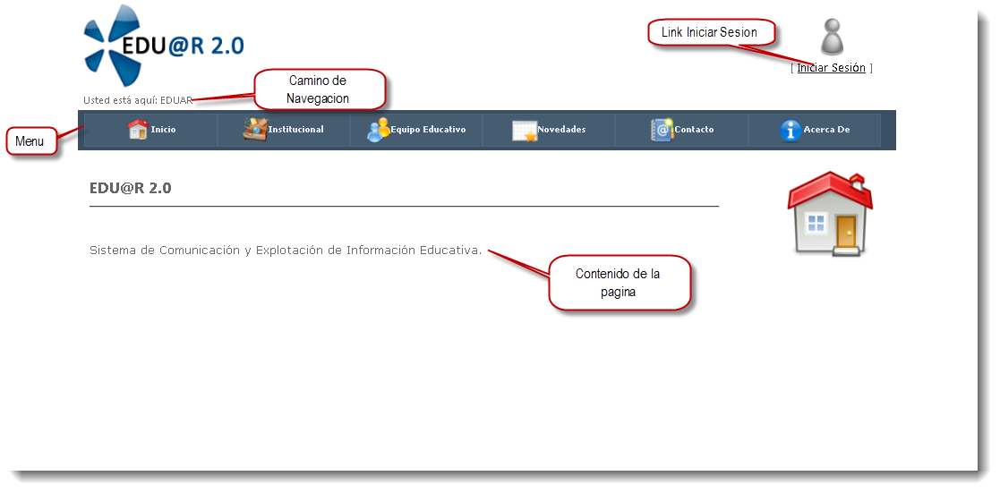
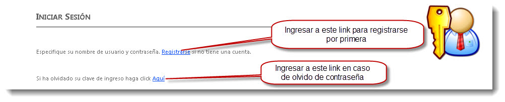
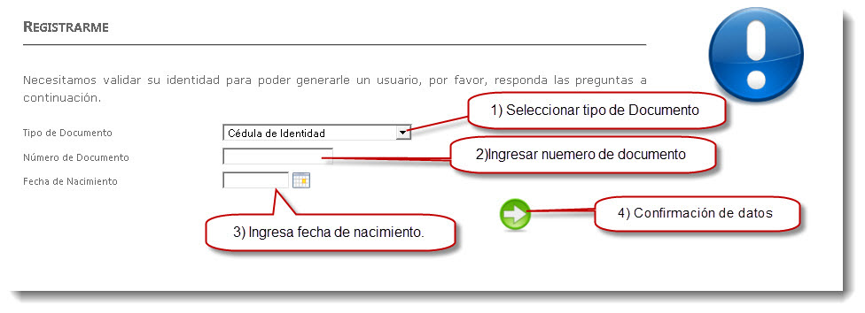
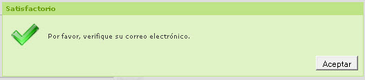
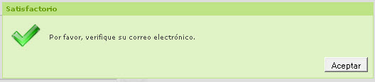

Presentación
Esta Página web contiene información general de la entidad educativa. Todo lo que usted necesita para conocer la entidad educativa como su historia, su visión , su ubicación, el equipo de educadores que la componen, las actividades que realizan ya sean por los alumnos o docentes, publicaciones de novedades de interés general, formas de contactarse con la institución.
Además en esta pagina web se encuentra el link de acceso al Sistema de Edu@r 2.0, si usted forma parte de la institución puede acceder a mayor información vinculada a la entidad educativa según el rol que tenga.
Elementos del Home
En Home publico de Edu@a 2.0 podemos observar los siguientes elementos.
Camino de Navegación: Aquí muestra el camino de navegación segun en que parte del esquema de árbol se encuentre en la pagina actual.
Link de Inicio de sesión: Este link nos lleva a una nueva pagina donde nos permite ingresar usuario y contraseña para iniciar sesión en Edu@r 2.0. En esta pagina también veremos los link para Registrar un nuevo usuario y un link para ingresar en el caso que se olvido su contraseña.
Barra de Menús: En este sector de la página se encuentra las diferentes opciones que el usuario puede elegir para acceder a determinada información que se mostrara en el contenido de la página. La información se organiza siguiendo el principio de árbol, esto quiere decir que un menú puede tener menús hijos y menús padres.
Contenido: En esta área se muestra la información relacionada o lo seleccionado

Iniciar sesion
En la siguiente pagina iniciar sesión usted puede ingresar al Sistema Edu@r 2.0. Para acceder al sistema se requiere un nombre de Usuario y Contraseña. En caso que no tenga cuenta diríjase a Registrarse.

Ademas esta pagina tiene dos link uno para registra una nueva cuenta y otro para caso de olvido de contraseña.
Registrarme como usuario nuevo
Para registrar al nuevo usuario se solicita ingresar una serie de datos para validar que esta el usuario esta vinculado a la institucion. Como Tipo y numero de documento y fecha de nacimiento. La pantalla que se muestra es la siuiente:

En el primer campo se solicita que el usuario seleccione el tipo de Documento del usuario. Ejemplo de tipo a seleccionar Documento Nacional de Identidad. (Campo obligatorio para realizar la registración)
En este campo se solicita que el usuario ingrese el número de documento. El número debe ser ingresado sin puntos, ni comas ni espacios. Ejemplo de número de DNI ingresado correctamente: 45872733 Ejemplo de número de DNI ingresado incorrectamente: 45.872.733 (Campo obligatorio para realizar la registración)
En el campo de Fecha de Nacimiento debe ingresar la fecha con el siguiente formato: DD/MM/AAAA Ejemplo su usted nació el día 7 de Noviembre del 1984, debe ingresar en el campo 07/11/1984 (Campo obligatorio para realizar la registración)
Al hacer click en este botón con el mouse le mostrará un almanaque donde podrá seleccionar la fecha de nacimiento. Hacer click en la flecha cuando se finalice el ingreso de todos los campos obligatorios.
Olvide mi Contraseña
En caso de olvidar su contraseña, el sistema le permite restablecer su contraseña. Para lo cual, por medidas de seguridad deberá ingresar su direccion de email.

Luego de ingresar su email, haga hacer un click con el mouse en el sobre. Automáticamente se enviara un correo electrónico con las instrucciones a seguir por el olvido de contraseña.
En el caso que aparezca la siguiente pantalla es porque la dirreccion de email que esta ingresando no coincide con ninguna cuenta del sistema Edu@r 2.0.
 

Si la dirección de email coincide con la registrada en el establecimiento educativo.
Luego de ingresar su email, haga hacer un click con el mouse en el sobre. Automáticamente se enviara un correo electrónico con las instrucciones a seguir por el olvido de contraseña.